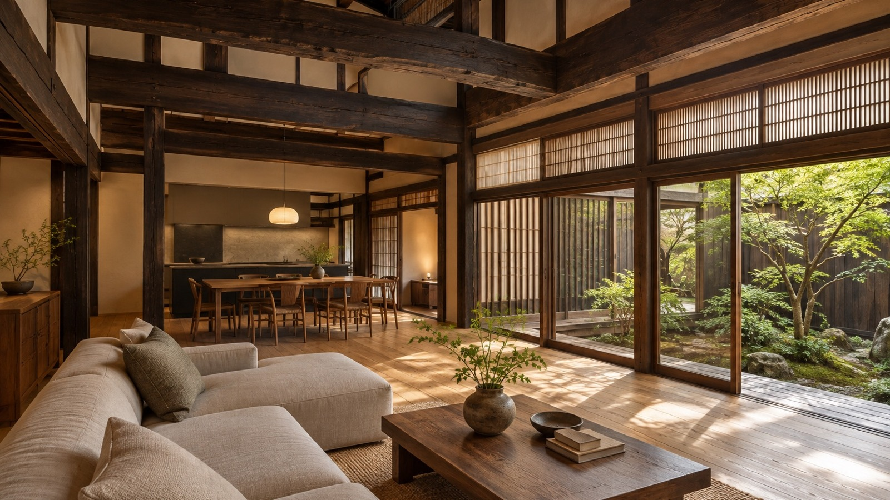
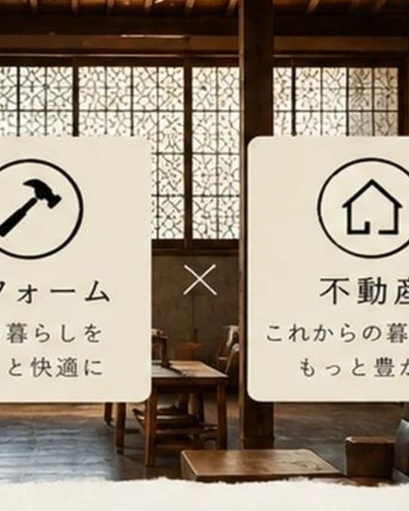
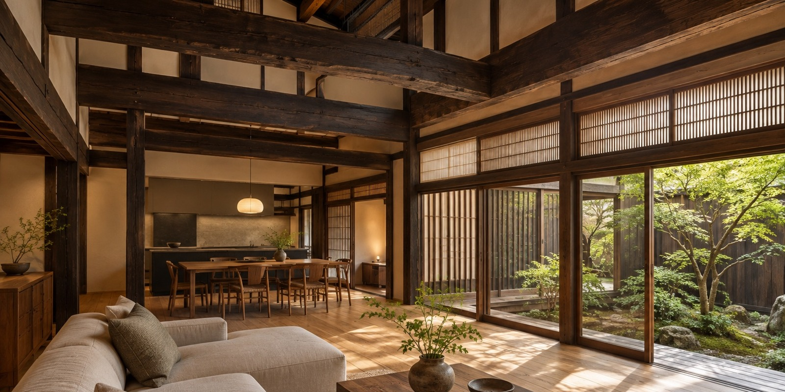
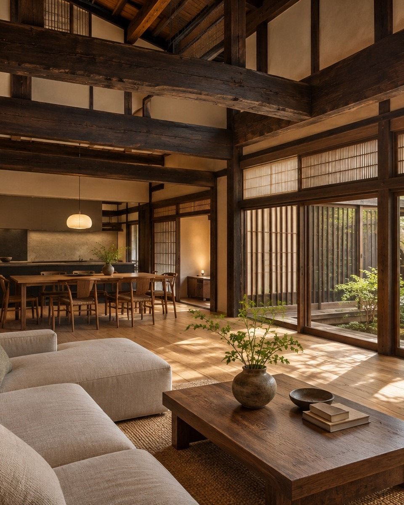
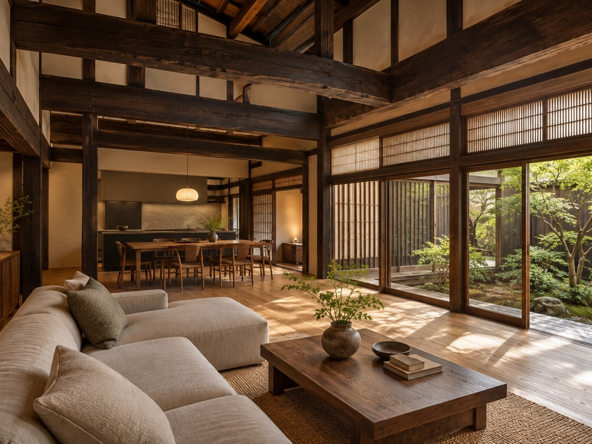
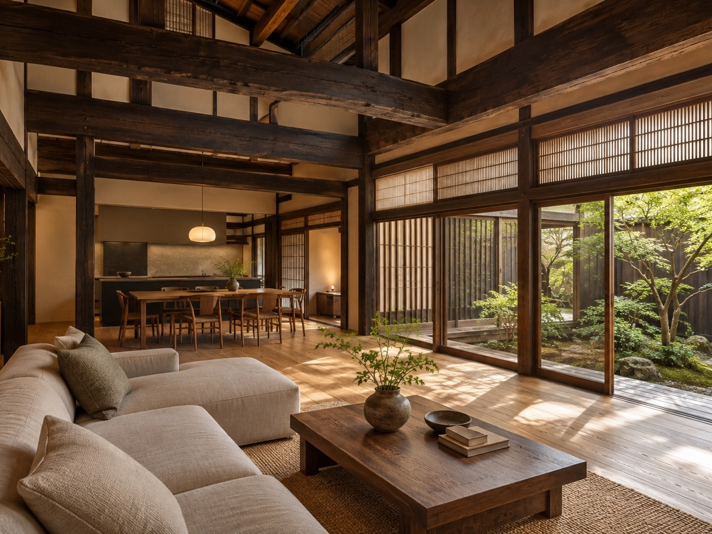

不動産売買・仲介
土地・戸建・中古住宅・収益物件まで。売る側も買う側も、条件整理から相談できます。

I-KATA株式会社
住まいの価値をつなぐ不動産相談も、今あるものを活かしながら暮らしを整えるリフォームも。I-KATAは、住まいの課題を解決するための窓口を一つにまとめた会社です。
I-KATA 不動産
売る・買うだけではなく、相続した家、空き家、これからどう使うか迷っている住まいの相談まで。I-KATAは、不動産と住まいの困りごとをまとめて受け止めます。

土地・戸建・中古住宅・収益物件まで。売る側も買う側も、条件整理から相談できます。
急ぎたいのか、より良い条件を目指したいのか。状況に合わせて、売り方の選択肢を整理します。
管理が難しい空き家は、活用・売却・リフォーム・維持管理の方向性から一緒に考えます。
相続登記の義務化もふまえ、相続した不動産の整理、相談先の案内、次の一歩の決め方を支えます。

I-KATA リフォーム
掲載写真も、古い住まいを今の暮らしに合わせて整えた空間です。木の梁や庭とのつながりを活かしながら、明るさ・動線・居場所を見直す。I-KATAのリフォームは、見た目だけでなく、暮らし方から整えます。

営業窓口だけで終わらず、経験のある職人・施工側の視点を踏まえて、品質や仕上がりまで見通した提案を行います。
相談、現地確認、内容整理、工事の進行まで一人の担当軸で進むため、伝え漏れや行き違いが起きにくい体制です。
希望をそのまま受け取るだけではなく、予算・優先順位・工事の向き不向きも含めて、必要な判断材料を言葉にします。
「こんな暮らし方がしたい」という感覚から出発し、使い方・収納・家具・光の入り方まで一緒に考え、形にします。

